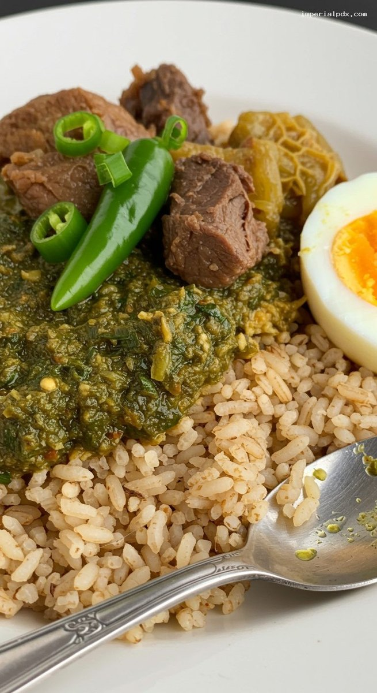
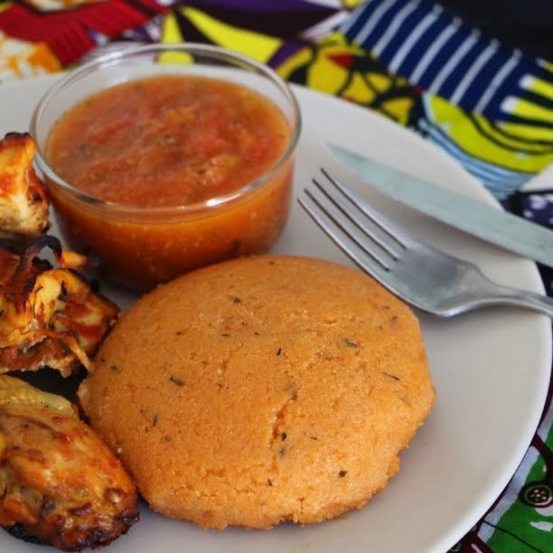
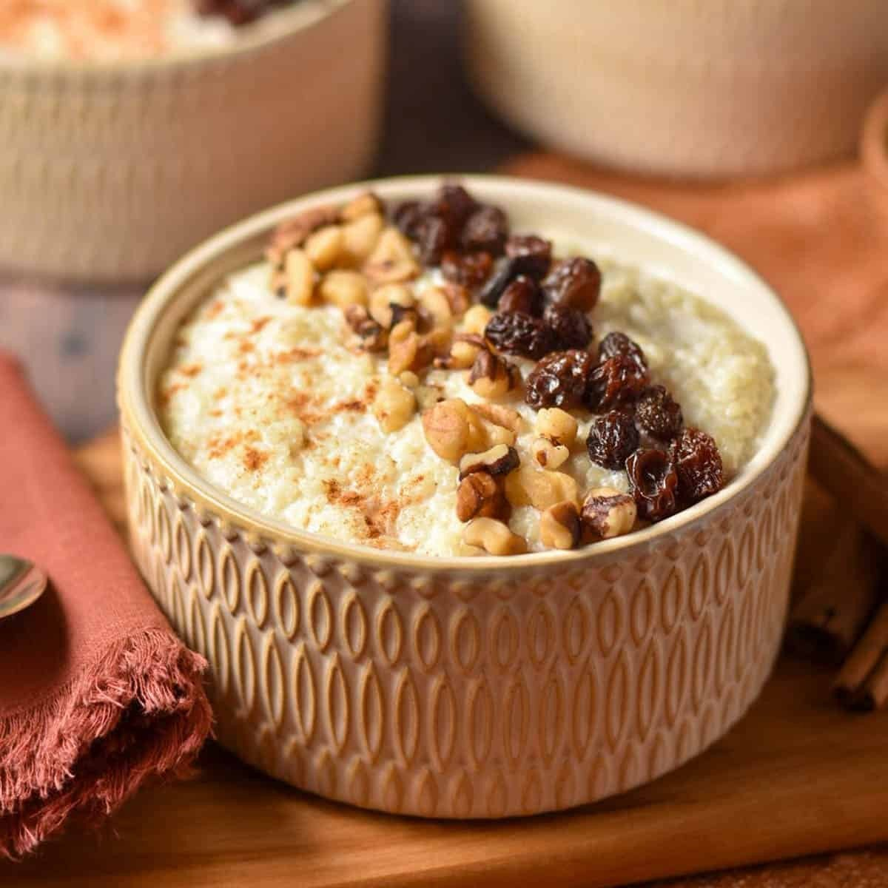

Nigeria
La sauce yoruba aux poivrons et piments verts, frite dans l’huile de palme blanchie avec de l’iru, des viandes et des œufs, servie avec du riz ofada.


← Retour aux recettes
 HaïtiGriot et bananes pesées
HaïtiGriot et bananes pesées HaïtiDiri djon djon
HaïtiDiri djon djon